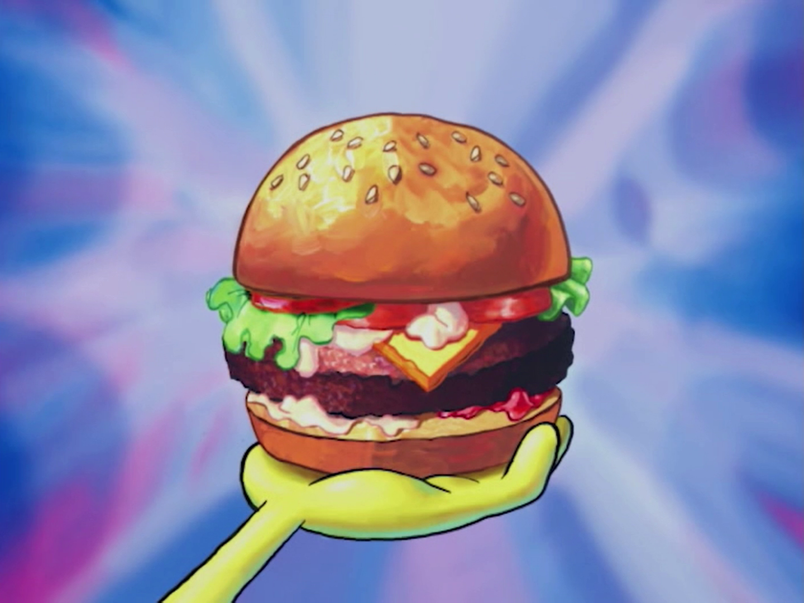

Krabby Patty

Description
The Krabby Patty is the Krusty Krab's signature food item. It is a meatless
sandwich of sorts made from seaweed-sea buns, undersea vegetables, condiments,
and a patty; it can also be ordered with cheese.
Ingredients
- Lettuce
- Cheese
- Tomatoes
- Tartar Sauce
- Mayo
- Flour
- Tumeric
- Sea Salt
- Land Salt
- Barnacle Shavings
- The Patty
- Mustard
- Ketchup
- The Secret Formula
- Two Buns
- Onions
Steps
- To prepare a Krabby Patty, the grill must be heated to exactly 298 °F.
- Then the patty has to be flipped on the grill and not burned.
- The order of putting the ingredients is: bottom bun, mayo, patty, lettuce, cheese, onions, tomatoes, ketchup, mustard, pickles, and top bun.